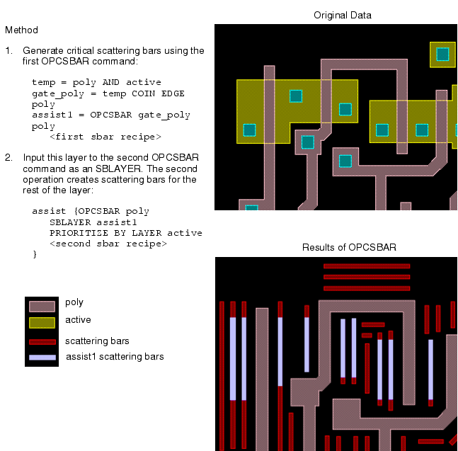
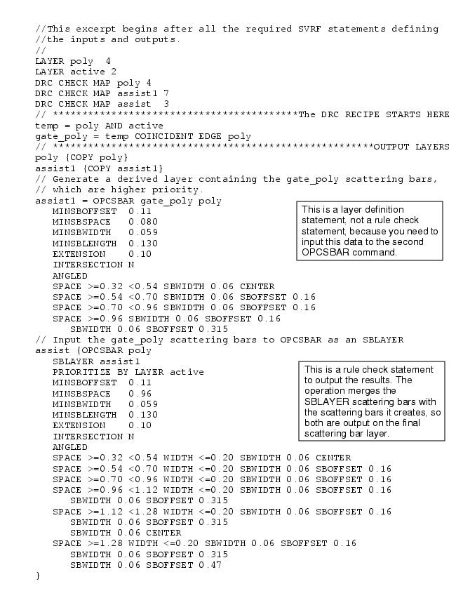
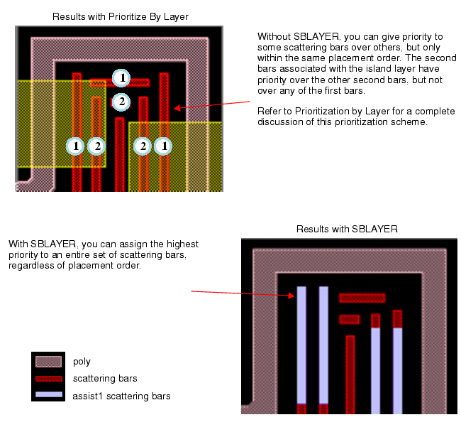

You input previously generated
scattering bars using SBLAYER and additionally generate new scattering
bars.
Figure 1. Method to Obtain
Incremental Scattering Bars
Figure 2. Rule
File Excerpt for Incremental Scattering Bars
Figure 3. Using SBLAYER 